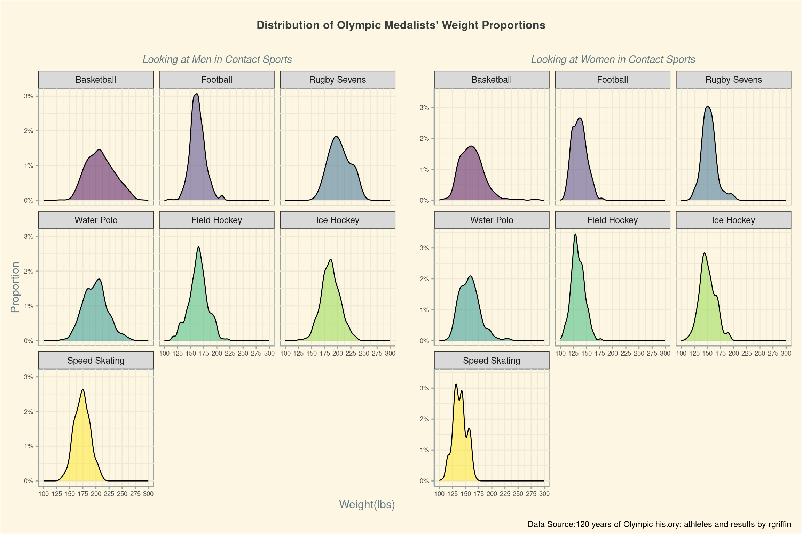
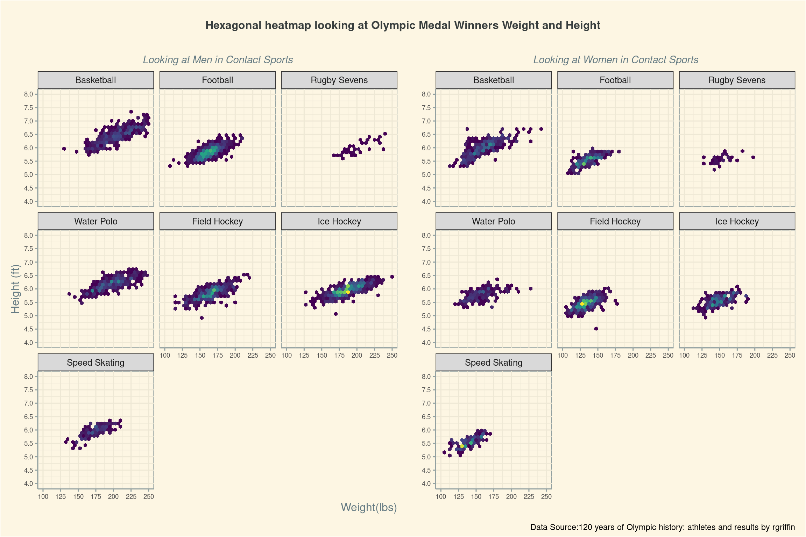

── Attaching core tidyverse packages ──────────────────────── tidyverse 2.0.0 ──
✔ dplyr 1.1.4 ✔ readr 2.1.5
✔ forcats 1.0.0 ✔ stringr 1.5.1
✔ ggplot2 3.5.1 ✔ tibble 3.2.1
✔ lubridate 1.9.4 ✔ tidyr 1.3.1
✔ purrr 1.0.4
── Conflicts ────────────────────────────────────────── tidyverse_conflicts() ──
✖ dplyr::filter() masks stats::filter()
✖ dplyr::lag() masks stats::lag()
ℹ Use the conflicted package (<http://conflicted.r-lib.org/>) to force all conflicts to become errors
Attaching package: 'scales'
The following object is masked from 'package:purrr':
discard
The following object is masked from 'package:readr':
col_factorProject title
# load data here
olympics <- read_csv("data/olympics.csv")Rows: 271116 Columns: 15
── Column specification ────────────────────────────────────────────────────────
Delimiter: ","
chr (10): name, sex, team, noc, games, season, city, sport, event, medal
dbl (5): id, age, height, weight, year
ℹ Use `spec()` to retrieve the full column specification for this data.
ℹ Specify the column types or set `show_col_types = FALSE` to quiet this message.wwbi_country <- read_csv("data/wwbi_country.csv")Rows: 202 Columns: 29
── Column specification ────────────────────────────────────────────────────────
Delimiter: ","
chr (21): country_code, short_name, table_name, long_name, x2_alpha_code, cu...
dbl (7): national_accounts_base_year, national_accounts_reference_year, sys...
lgl (1): vital_registration_complete
ℹ Use `spec()` to retrieve the full column specification for this data.
ℹ Specify the column types or set `show_col_types = FALSE` to quiet this message.Introduction
How does Global South participation in the Olympics compare to the Global North and how does participation change during the Summer versus Winter games?
Introduction
In this analysis, we aim to understand the prevalence of Global North countries in the Olympic games versus the Global South countries in the Olympic games. The Global North are countries which typically, but not exclusively, sit above the equator. Such countries include the United States, Canada, the countries of Europe, Japan, South Korea, Taiwan, Australia, New Zealand, and Israel. The Global South includes countries of Latin America, Africa, the Middle East (excluding Israel), and Asia and Oceania, excluding the aforementioned countries (Britannica.com). We have also used NORRAG’s data on the definition of Global North and Global South countries to double check where we have placed these countries.
To answer this question, we used an additional data set which contains location information of all countries. We recognize that country status, names, and existence has changed drastically over the past nearly 130 year lifetime of the Olympics, but have chosen to use the contemporary data set available to us. To help remedy at least some of these problems, we have hand-picked some notable countries that are no longer in existence, such as the Soviet Union, Czechoslovakia, Yugoslavia, and East and West Germany.
We also need several columns from both data sets. The columns from the Olympics data set are noc (country code) and season, while the columns we need from the Worldwide Bureaucracy Index are the country code and the region. We merged these two data sets based on the country code, taking care to rename major extinct countries to their contemporary counterpart. We were able to designate a country as “Global North” versus “Global South” almost exclusively through the “region” column from WWBI. However, we also took care to comb through each country using NORRAG’s data as a guide, taking care to include Global South countries listed as being from the region “Europe and Central Asia” in the correct designation.
We needed to utilize the season column, as the difference between Global South or Global North participants playing in the Summer Games versus the Winter Games is significant and should be separated.
Approach
The two plots we are utilizing to explore this question is a line chart and a proportional bar chart. These visualizations will help us compare the number of athletes from the two categories and the proportion of athletes competing in the Olympic games. Both plots share the same colors: green and yellow for summer and light blue and dark blue for winter. We took care to check on color-blindness.com to make sure our charts were still legible with this color choice, as green and yellow can be a challenging color contrast for some colorblind readers. Since our color choice has a large difference in value (light versus dark), our charts are still legible for everyone.
Line Chart: Our line chart, split between the Summer and Winter games helps us understand how the raw number of athletes from the Global South and Global North have changed over time. Since the Olympic games occur every four years for each season, we wanted to see the date points for each game. We added a geom_point() function to reflect the dates listed.
Proportional Bar Chart: In order to visualize the proportional relationship between athletes in the Global South versus Global North, we use a bar chart which compares the relative presence of Global South versus Global North players in each Olympic game. This chart also helps us compare the Winter versus Summer Games, as the raw number of athletes competing in the Winter Games are far fewer than the Summer Games. We also experimented with comparing the relative number of countries competing in the Games, but realized later on that this comparison is more subject to the change in the political organization of countries. For example, the breakup of the Soviet Union and the Baltic nations in the early 1990’s created more countries, despite there being a similar number of eligible athletes.
Analysis
#Data wrangling ####
#Hard-coding names of some of the countries to their contemporary counterparts. The actual country name does not matter, only that they are accounted for and are in the right designation (global south vs global north)
olympics$noc <- ifelse(startsWith(olympics$noc, "URS"), "RUS", olympics$noc)
olympics$noc <- ifelse(startsWith(olympics$noc, "TCH"), "CZE", olympics$noc)
olympics$noc <- ifelse(startsWith(olympics$noc, "YUG"), "SRB", olympics$noc)#I know this one is controversial
olympics$noc <- ifelse(startsWith(olympics$noc, "FRG"), "GER", olympics$noc)
olympics$noc <- ifelse(startsWith(olympics$noc, "GDR"), "RUS", olympics$noc) #so i am listing East Germany as under "RUS", as it was a satellite state of the Soviet Union and does not have a contemporary equivalent unlike West Germany, which is currently a Western Capitalist Democracy. Had the Soviets won the Cold War, I would have changed the name of West Germany to the United States to properly reflect the geopolitical allegiances of the era.
#merge dataframes
merged_df <- merge(olympics, wwbi_country[,c("country_code", "region")], by.x = "noc", by.y = "country_code", all.x = TRUE)
# Remove rows with NA in the 'region' column
merged_df <- merged_df %>%
filter(!is.na(region))
excluded_countries <- c("JPN", "KOR", "ISR", "AUS", "NZL")
included_countries <- c("AZE", "KAZ", "TJK", "UZB", "TKM", "TUR", "KGZ", "RUS", "UKR", "SRB", "CZE", "ARM", "BLR", "HRV", "CYP", "GEO", "HKG", "MNE", "SGP", "SVK", "UZB","MNG")
#create a column to classify each country as global south or global north
merged_df <- merged_df %>%
mutate(
global_south = ifelse(
noc %in% included_countries, 1,
ifelse(region %in% c("Latin America & Caribbean", "South Asia", "Sub-Saharan Africa", "Middle East & North Africa", "East Asia & Pacific") &
!(noc %in% excluded_countries),1,0)
)
)# merged_df <- merged_df |>
# group_by(region) |>
# mutate(global_south = ifelse(team %in% !("Japan"),1,0))
merged_df <- merged_df %>%
group_by(year, team) %>%
mutate(athlete_count = n())
# Group data to count athletes per year, developing status
athlete_counts <- merged_df %>%
group_by(year, global_south,season) %>%
summarise(athlete_count = n(), .groups = "drop") %>%
mutate(global_south = factor(global_south, levels = c(0, 1), labels = c("Global North Countries", "Global South Countries")))
# Create the plot
ggplot(athlete_counts, aes(x = year, y = athlete_count,
color = fct_reorder2(interaction(season, global_south), year, athlete_count), # Reorder based on year and athlete_count
group = interaction(season, global_south))) +
geom_line(size = 1) +
geom_point(size = 2) +
labs(title = "Participation of Global South vs. Global North countries in the Olympics Over Time",
x = "Year", y = "Number of Athletes", color = "Country Status") +
scale_color_manual(values = c(
"Summer.Global North Countries" = "#636b3d",
"Summer.Global South Countries" = "#f5d28c",
"Winter.Global North Countries" = "#4a6583",
"Winter.Global South Countries" = "#99b3bf"),
labels = c(
"Summer.Global North Countries" = "Global North Athletes",
"Summer.Global South Countries" = "Global South Athletes",
"Winter.Global North Countries" = "Global North Athletes",
"Winter.Global South Countries" = "Global South Athletes")) +
theme_solarized() +
theme(
plot.title = element_text(size = 10, hjust = 0.5),
legend.position = "top",
legend.title = element_blank(),
legend.text = element_text(color = "#5a6363")
) +
scale_x_continuous(limits = c(1890, 2020), breaks = seq(1890, 2020, by = 12)) +
facet_wrap(vars(season))Warning: Using `size` aesthetic for lines was deprecated in ggplot2 3.4.0.
ℹ Please use `linewidth` instead.
# Compute total athletes per year
total_athletes_per_year <- athlete_counts %>%
group_by(year) %>%
summarise(total_athletes = sum(athlete_count))
# Merge to calculate proportion
athlete_counts_two <- athlete_counts %>%
left_join(total_athletes_per_year, by = "year") %>%
mutate(proportion = athlete_count / total_athletes,
year=fct_rev(factor(year)))
summer_filt <- athlete_counts_two |>
filter(season== "Summer")
winter_filt <- athlete_counts_two |>
filter(season== "Winter")
summer_plot <- summer_filt |>
ggplot(aes(x = athlete_count, y = year, fill = as.factor(global_south))) +
geom_bar(stat = "identity", position = "fill") + # Normalize bars to 100%
labs(
x = "", y = "", fill = "") +
scale_x_continuous(labels = scales::percent) +
theme_solarized() +
theme(
plot.title = element_text(hjust=0.2),
axis.text.x = element_text(hjust = 1),
legend.position = "top",
legend.text = element_text(color = "#5a6363")
) +
scale_fill_manual(values = c("#636b3d", "#f5d28c"), labels = c("Global North Countries", "Global South Countries")) +
facet_wrap(vars(season)) +
guides(
fill = guide_legend(reverse = TRUE)
)
winter_plot <- winter_filt |>
ggplot(aes(x = athlete_count, y = year, fill = as.factor(global_south))) +
geom_bar(stat = "identity", position = "fill") + # Normalize bars to 100%
labs(
x = "Proportion of Countries", y = "", fill = "") +
scale_x_continuous(labels = scales::percent) +
theme_solarized() +
theme(
plot.title = element_text(hjust=0.2),
axis.text.x = element_text(hjust = 1, color = "#5a6363"),
axis.title.x = element_text(hjust = -0.4, color = "#5a6363"),
legend.position = "top",
legend.justification = c(0.5, 0),
legend.text = element_text(color = "#5a6363")
) +
scale_fill_manual(values = c("#4a6583","#ddf4ff"), labels = c("Global North Countries", "Global South Countries")) +
facet_wrap(vars(season)) +
guides(
fill = guide_legend(reverse = TRUE)
)
(summer_plot*winter_plot)+plot_annotation(
title = "Proportion of Athletes in the Global South versus Global North",
caption = "Data Source:120 years of Olympic history: athletes and results by rgriffin, Worldwide Bureaucracy Index",
theme = theme(plot.title =element_text(face = "bold",hjust = 0.5,
size = 12,color="#373d3d",margin = margin(t=17,b=0,r=0,l=0)),
plot.background = element_rect(fill="#fdf6e3"))
)
Discussion
The line chart revealed some rather interesting data regarding the prevalence of Global South nations in the Olympics. After including the Soviet Union into our data set, the prevalence of Olympic participation from the Global South jumped dramatically. It is interesting to see that the Global South participation in the Olympic Games is far less than the Global North despite the dramatically larger population of 6 billion people as of March 2025, compared to the Global North’s approximate 1.6 billion people (worldeconomics.com). We were also able to see the how political events shaped the number of athletes participating. For example, the boycott of the 1980 Moscow Olympic Games (as a consequence of the USSR invasion of Afghanistan) show how dramatically the Global North’s participation fell compared to the participation of the Global South, which actually increased that year. Similarly, in 1992, the year after the official dissolution of the Soviet Union, there is a dramatic drop in participation from the Global South as the participation of the Global North rises dramatically. The Winter Games as depicted on the line chart has far fewer members and appears to have less of a reaction to political events as the volatile and more popular Summer Games. Most notably, the decrease in participation from the Global South after 1991 appears to be far less than the Summer Games. However, more information about these changes would be better analyzed with a proportional bar chart.
Our proportional bar chart is better able to show us the difference between the Winter and Summer games in their proportional participation and how that participation actually changes betweent he years. Here we can more clearly see the dramatic drop in participation of the Global South in 1992 after the fall of the Soviet Union in the Summer Games and its less dramatic drop in the Winter Games of the same year. It was also surprising to see how flat the proportional increase of Winter Games participation is, though this makes some sense considering that the majority of the population in the Global South does not live near winter weather. The Summer games is increasing at a faster rate, but still appears to be far less than I would have thought, especially considering the growth of economies like China, Vietnam, India, and Brazil in the past two decades.
It would also be interesting to not that while not shown in the graph, the majority of events in the Olympic Games originate from Europe and the United States. The former chair of the IOC was Thomas Bach, a US citizen, who added three Olympic swimming events during his tenure between 2013 and 2021– a sport which is dominated by the US. Also added in 2013 was Olympic High Diving, also partially dominated by the US. If there were more events which featured non-Western sports, such as Kushti or Sepak Takraw, would there be greater participation from our southern neighbors?
How do height and weight influence the likelihood of winning an Olympic medal in contact sports, and do these factors differ between male and female athletes?
Introduction
In this analysis, we aim to examine the role of weight an height in the Olympic medal winners across multiple games, focusing on whether these factors differ between male and female athletes. We are particularly interested in this question because it allows us to explore potential patterns in physical attributes among top-performing athletes and how sex-based discrepancies exist in contact sports.
To answer this question, we need several key columns from the dataset. The sport column is essential for filtering only contact sports without weight classes, as weight categories could distort our findings. We selected Basketball, Water Polo, Field Hockey, Football, Rugby Sevens, Ice Hockey, and Speed Skating because they all have male and female divisions. The medal column is necessary to isolate athletes who have won a medal, removing any NA values. Finally, weight and height are key factors in our analysis, but since they are recorded in metric unites, we converted them to pounds and feet to align with our American audience’s familiarity with the imperial system of measurement.
Approach
To analyze the relationship between height, weight, and Olympic medal-winning athletes across different sports and between sexes, we will use two types of plots: a density plot and a hexagonal bin plot (hex plot). These visualizations will help us examine the distribution of physical attributes and their potential impact on performance while effectively handling overlapping data points.
Density Plot: This plot will display the distribution of weights among Olympic medalists, separated by sex. By using density curves, we can observe where most athletes’ weights are concentrated within each sport. Initially, we considered plotting all sports together, but even with transparency adjustments, the overlap made it difficult to read. To address this, we faceted the graphs by sport, allowing for clearer comparisons within each category. Additionally, we will create separate density plots for male and female athletes and then combine them using the patchwork library, ensuring a side-by-side comparison of weight distributions between sexes.
Hexagonal Bin Plot (Hex Plot): This plot will visualize the relationship between height and weight for Olympic medalists, helping us understand how these two factors interact across different sports. Instead of a scatterplot, which can become cluttered with large datasets, the hex plot groups data points into hexagonal bins and uses color intensity to indicate density. Similar to the density plot, we facet the graphs by sport and separate them by sex. To enhance comparability, we will generate separate hex plots for male and female athletes and then combine the plots using the patchwork library, allowing for direct visual comparison of trends between the two groups.
Analysis
(2-3 code blocks, 2 figures, text/code comments as needed) In this section, provide the code that generates your plots. Use scale functions to provide nice axis labels and guides. You are welcome to use theme functions to customize the appearance of your plot, but you are not required to do so. All plots must be made with ggplot2. Do not use base R or lattice plotting functions.
contact_sports<-c("Basketball","Water Polo","Hockey","Football","Rugby Sevens",
"Ice Hockey","Speed Skating")
order_sports<-c("Basketball","Football","Rugby Sevens",
"Water Polo","Field Hockey","Ice Hockey","Speed Skating")
filtered_df<-olympics|>
drop_na(age)|>
filter(medal %in% c("Gold","Silver","Bronze"),sport %in% contact_sports)|>
mutate(
height_ft= round(height/30.48,2),
weight_lb=round(weight*2.20462,2),
sport= if_else(sport=="Hockey","Field Hockey",sport),
sport=factor(sport,levels =order_sports )
)|>
select(sex,weight,weight_lb,height,height_ft,sport,medal)
male_filt<-filtered_df|>
filter(sex=="M")
fe_filt<-filtered_df|>
filter(sex=="F")men_den<-male_filt|>
ggplot(aes(x=weight_lb,fill=sport))+geom_density(alpha=0.5,show.legend = FALSE)+
scale_fill_viridis_d()+
scale_y_continuous(labels = label_percent())+
scale_x_continuous(limits = c(100,300),breaks = seq(100,300,25))+
facet_wrap(vars(sport))+
theme_solarized()+
labs(
y="Proportion",
x="Weight(lbs)",
title = "",
subtitle = "Looking at Men in Contact Sports"
)+
theme(
plot.subtitle=element_text(face = "italic",hjust = 0.5,size = 11),
axis.text.x = element_text(size = 7),
axis.text.y = element_text(size = 7),
axis.title.x = element_text(hjust = 1)
)
women_den<-fe_filt|>
ggplot(aes(x=weight_lb,fill=sport))+geom_density(alpha=0.5,show.legend = FALSE)+
scale_fill_viridis_d()+
scale_y_continuous(labels = label_percent())+
scale_x_continuous(limits = c(100,300),breaks = seq(100,300,25))+
facet_wrap(vars(sport))+
theme_solarized()+
labs(
y="",
x="",
title = "",
subtitle = "Looking at Women in Contact Sports"
)+
theme(
plot.subtitle=element_text(face = "italic",hjust = 0.5,size = 11),
axis.text.x = element_text(size = 7),
axis.text.y = element_text(size = 7),
axis.title.x = element_text(hjust = 1)
)
(men_den*women_den)+plot_annotation(
title = "Distribution of Olympic Medalists' Weight Proportions",
caption = "Data Source:120 years of Olympic history: athletes and results by rgriffin",
theme = theme(plot.title =element_text(face = "bold",hjust = 0.5,
size = 12,color="#373d3d",margin = margin(t=17,b=0,r=0,l=0)),
plot.background = element_rect(fill="#fdf6e3"))
)Warning: Removed 1394 rows containing non-finite outside the scale range
(`stat_density()`).Warning: Removed 34 rows containing non-finite outside the scale range
(`stat_density()`).
males<-ggplot(male_filt, aes(x = weight_lb, y = height_ft)) +
geom_hex(show.legend = FALSE) +
scale_fill_viridis_c() +
scale_y_continuous(limits = c(4,8),n.breaks = 10)+
scale_x_continuous(limits = c(100,250),breaks = seq(100,250,25))+
labs(fill = "Count") +
facet_wrap(vars(sport))+
theme_solarized()+
labs(
y="Height (ft)",
x="Weight(lbs)",
title = "",
subtitle = "Looking at Men in Contact Sports"
)+
theme(
plot.subtitle=element_text(face = "italic",hjust = 0.5,size = 11),
axis.text.x = element_text(size = 7),
axis.text.y = element_text(size = 7),
axis.title.x = element_text(hjust = 1)
)
females<-ggplot(fe_filt, aes(x = weight_lb, y = height_ft)) +
geom_hex(show.legend = FALSE) +
scale_fill_viridis_c() +
scale_y_continuous(limits = c(4,8),n.breaks = 10)+
scale_x_continuous(limits = c(100,250),breaks = seq(100,250,25))+
labs(fill = "Count") +
facet_wrap(vars(sport))+
theme_solarized()+
labs(
y="",
x="",
title ="",
subtitle = "Looking at Women in Contact Sports"
)+
theme(
plot.subtitle=element_text(face = "italic",hjust = 0.5,size = 11),
axis.text.x = element_text(size = 7),
axis.text.y = element_text(size = 7)
)
(males*females)+plot_annotation(
title = "Hexagonal heatmap looking at Olympic Medal Winners Weight and Height",
caption = "Data Source:120 years of Olympic history: athletes and results by rgriffin",
theme = theme(plot.title =element_text(face = "bold",hjust = 0.5,
size = 12,color="#373d3d",margin = margin(t=17,b=0,r=0,l=0)),
plot.background = element_rect(fill="#fdf6e3"))
)Warning: Removed 1473 rows containing non-finite outside the scale range
(`stat_binhex()`).Warning: Removed 38 rows containing non-finite outside the scale range
(`stat_binhex()`).
Discussion
The visualizations reveal distinct physical characteristic patterns among Olympic medalists across different contact sports. In Image 3, the density plots show weight distributions where men consistently have higher median weights than women in the same sports, with football (soccer) and rugby sevens displaying the most pronounced gender differences. Speed skating athletes exhibit the lowest weights overall, clustering around 150-160 lbs, likely reflecting the advantage of lower body mass for speed and agility. Notably, women’s distributions appear more staggered or multimodal (particularly evident in speed skating), reflecting the varying developmental stages of women’s sports globally and differences in athlete development across countries.
Image 4’s hexagonal heatmaps illustrate the relationship between height and weight, showing strong positive correlations across all sports—taller athletes tend to be heavier. Basketball displays the most vertical spread, with male athletes reaching heights above 7 feet while maintaining proportionate weight-to-height ratios. The global inequality in resources dedicated to women’s sports likely contributes to less homogenized physical characteristics than we see in men’s sports, where greater competition tends to narrow the range of “successful” body types. This differential resource allocation creates distinct physical clusters in women’s sports.
These patterns reflect the complex interplay between biological differences, societal influences, and the evolutionary trajectory of sports on the global stage. Sport-specific positional requirements in disciplines like rugby sevens and field hockey might further explain the multimodal distributions, particularly in women’s competitions where role specialization creates distinct physical sub-populations. Women’s elite sports are still discovering their optimal physical parameters in many cases, while men’s sports have had longer to converge on “ideal” physiques through decades of competition. As women’s sports continue to develop globally with more equitable support and participation, we might see these distributions either normalize toward single modes (as in men’s sports) or maintain their distinctive patterns, establishing unique optimization strategies different from men’s competitions.
Presentation
Our presentation can be found here.
Data
Griffin, R. (2018). 120 years of Olympic history: athletes and results [Data set]. Kaggle. Retrieved February 11, 2025, from https://www.kaggle.com/datasets/rgriffin/120-years-of-olympic-history-athletes-and-results
R for Data Science Community. (2024). Tidytuesday 2024-04-30: World Bureaucracy Indicators [Data set]. GitHub. Retrieved February 11, 2025, from https://github.com/rfordatascience/tidytuesday/blob/main/data/2024/2024-04-30/readme.md
References
List any references here. You should, at a minimum, list your data source.
Data Source:
RGriffin Kaggle dataset: 120 years of Olympic history: athletes and results